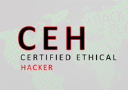

Ethical Hacking And Security
"Do Smart Work And Be A Hackers "
To beat a hacker, you need to think like one! This is exactly what this class will teach you. It is the pinnacle of the most desired information security training program any information security professional will ever want to be in To master the hacking technologies, you will need to become one.|  | This class will immerse the students into an interactive environment where they will be shown how to scan, test, hack and secure their own systems. The lab intensive environment gives each student in-depth knowledge and practical experience with the current essential security systems. Students will begin by understanding how perimeter defenses work and then be lead into scanning and attacking their own networks, no real network is harmed. |
Course Description
-Learn the "hacker" mindset-Learn about the tools of the trade
-Expand career opportunities
This class will immerse the students into an interactive environment where they will be shown how to scan, test, hack and secure their own systems. The lab intensive environment gives each student in-depth knowledge and practical experience with the current essential security systems. Students will begin by understanding how perimeter defenses work and then be lead into scanning and attacking their own networks, no real network is harmed. Students then learn how intruders escalate privileges and what steps can be taken to secure a system. Students will also learn about Intrusion Detection, Policy Creation, Social Engineering, DDoS Attacks, Buffer Overflows and Virus Creation.
Duration:
Duration- 1.5 months + BenefitsCertification
The Certified Ethical Hacker exam may be taken on the last day of the training (optional). Students need to pass the exam to receive CEH certification.Legal Agreement
Ethical Hacking and Countermeasures course mission is to educate, introduce and demonstrate hacking tools for penetration testing purposes only. Prior to attending this course, you will be asked to sign an agreement stating that you will not use the newly acquired skills for illegal or malicious attacks and you will not use such tools in an attempt to compromise any computer system.Course Outline
CEHv7 Curriculum consists of instructor-led training and self-study. The Instructor will provide the details of self-study modules to the students beginning of the class.| 1. Introduction of Ethical Hacking 2. Footprinting 3. Scanning Networks 4. Keylogger&phishing 5. Desktop phishing 6. Proxy & vpn 7.System Hacking 8. Email hacking & tracking. 9. Password stealing |
10. Dos & DDos attack. 11. Viruses and Worms 12. Trojan & backdoors 13. Wireless hacking 14. Stegnography 15. Cryptography 16. Session Hijacking. 17.Penetration Testing 18. Data Recovery |
19. Authentication Bypass 20. Cross Site Scripting 21.SQL injection 22. Whatsapp hacking 23. Location Tracing 24. Call Spoofing 25.Live camera hacking 26. Android Hacking. |
Convants Certified Security Analyst, CCSA an advanced ethical hacking training certification that complements the Certified Ethical Hacker, CEH certification by exploring the analytical phase ofethical hacking. While the Certified Ethical Hacker certification exposes the learner to hacking tools and technologies, the Certified Security Analyst course takes it a step further by exploring how to analyze the outcome from these tools and technologies. |
Course description
-Handle Penetration testing-checking Vulnerability analysis
-identify loopholes
Convants Certified Security Analyst, CCSA an advanced ethical hacking training certification that complements the Certified Ethical Hacker, CEH certification by exploring the analytical phase of ethical hacking. While the Certified Ethical Hacker certification exposes the learner to hacking tools and technologies, the Certified Security Analyst course takes it a step further by exploring how to analyze the outcome from these tools and technologies. Through groundbreaking network penetration testing training methods and techniques, this pen testing computer security certification helps students perform the intensive assessments required to effectively identify and mitigate risks to the information security of the infrastructure.
Duration
Duration- 1.5 months + BenefitsThe CCSA program contains 33 modules
| 1. The Need for Security Analysis 2. Advanced Googling 3. TCP/IP Packet Analysis 4. Advanced Sniffi ng Techniques 5. Vulnerability Analysis with Nessus 6. Advanced Wireless Testing 7. Designing a DMZ 8. Snort Analysis 9. Log Analysis 10. Advanced Exploits and Tools 11. Penetration Testing Methodologies |
12. Customers and Legal Agreements 13. Penetration Testing Planning and Scheduling 14. Pre Penetration Testing Checklist 15. Information Gathering 16. Vulnerability Analysis 17. External Penetration Testing 18. Internal Network Penetration Testing 19. Router Penetration Testing 20. Firewall Penetration Testing 21. IDS Penetration Testing 22. Wireless Network Penetration Testing |
23. Denial of Service Penetration Testing 24. Password Cracking Penetration Testing 25. Social Engineering Penetration Testing 26. Stolen Laptop Penetration Testing 27. Application Penetration Testing 28. Physical Security Penetration Testing 29. Database Penetration testing 30. VoIP Penetration Testing 31. VPN Penetration Testing 32. Penetration Testing Report Analysis 33. Penetration Testing Report and Documentation Writing |
The CHFI course will give participants the necessary skills to identify an intruder’s footprints and to properly gather the necessary evidence to prosecute. Many of today’s top tools of the forensic trade will be taught during this course, including software, hardware and specialized techniques. The need for businesses to become more efficient and integrated with one another, as well as the home user, has given way to a new type of criminal, the “cyber-criminal.” |
Course Description
-Learn how to catch hackrs-Learn about the forensic investigation
The CHFI course will give participants the necessary skills to identify an intruder’s footprints and to properly gather the necessary evidence to prosecute. Many of today’s top tools of the forensic trade will be taught during this course, including software, hardware and specialized techniques. The need for businesses to become more efficient and integrated with one another, as well as the home user, has given way to a new type of criminal, the “cyber-criminal.” It is no longer a matter of “will your or-ganization be comprised (hacked)?” but, rather, “when?” Today’s battles between corporations, gov-ernments, and countries are no longer fought only in the typical arenas of boardrooms or battlefields using physical force. Now the battlefield starts in the technical realm, which ties into most every facet of modern day life. If you or your organization requires the knowledge or skills to identify, track, and prosecute the cybercriminal, then this is the course for you.
Duration
Duration- 1.5 months + BenefitsCourse Outline
| Module 1: Computer Forensics in Today’s World Module 2: Law and Computer Forensics Module 3: Computer Investigation Process Module 4: First Responder Procedure Module 5: CSIRT Module 6: Computer Forensic Lab Module 7: Understanding File Systems and Hard Disks Module 8: Understanding Digital Media Devices Module 9: Windows, Linux and Macintosh Boot Processes Module 10: Windows Forensics Module 11: Linux Forensics Module 12: Data Acquisition and Duplication |
Module 13: Computer Forensic Tools Module 14: Forensics Investigations Using Encase Module 15: Recovering Deleted Files and Deleted partitions Module 16: Image Files Forensics Module 17: Steganography Module 18: Application Password Crackers Module 19: Network Forensics and Investigating Logs Module 20: Investigating Network Traffic Module 21: Investigating Wireless Attacks Module 22: Investigating Web Attacks Module 23: Router Forensics Module 24: Investigating DoS Attacks |
Module 25: Investigating Internet Crimes Module 26: Tracking E-mails and Investigating E-mail Crimes Module 27: Investigating Corporate Espionage Module 28: Investigating Trademark and Copyright Infringement Module 29: Investigating sexually harassment incidents Module 30: Investigating Child Pornography Module 31: PDA Forensics Module 32: iPod Forensics Module 33: Blackberry Forensics Module 34: Investigative Reports |